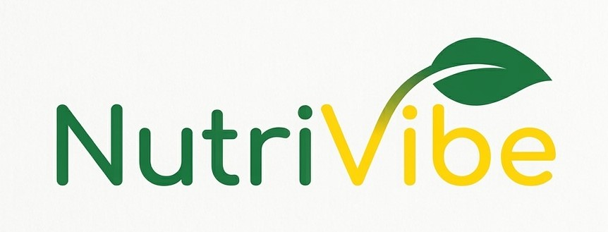

Tecnologia em conjunto com alimentação
O AplicativoO NutriVibe é um projeto voltado à utilização da tecnologia como ferramenta de apoio à alimentação, especialmente para crianças que apresentam seletividade ou recusa alimentar.
A proposta busca aproximar crianças, responsáveis à informações sobre alimentação por meio de uma aplicação simples, interativa e personalizada.
Conheça a proposta do aplicativoA alimentação infantil pode apresentar diferentes desafios durante o desenvolvimento da criança. Entre eles está a seletividade alimentar, caracterizada pela preferência por determinados alimentos e pela recusa de outros.
Essa situação também pode representar uma dificuldade para pais e responsáveis, principalmente quando precisam organizar as refeições e encontrar alternativas que sejam aceitas pela criança.
O projeto surgiu a partir da necessidade de tornar o processo de acompanhamento da alimentação infantil mais simples e acessível aos responsáveis.
Além disso, a utilização de elementos tecnológicos e interativos pode tornar a participação da criança mais interessante, aproximando a alimentação de uma experiência educativa e divertida.
Tecnologia + Nutrição + Educação + Interatividade
Desenvolver uma proposta de aplicativo capaz de auxiliar crianças seletivas e seus responsáveis no acompanhamento, planejamento e organização da alimentação.
O projeto possui relação principalmente com dois Objetivos de Desenvolvimento Sustentável da Organização das Nações Unidas.
| ODS | Objetivo | Relação com o projeto |
|---|---|---|
| ODS 3 | Saúde e Bem-Estar | Incentivo a uma alimentação mais adequada e acompanhamento dos hábitos alimentares. |
| ODS 12 | Consumo e Produção Responsáveis | Incentivo ao planejamento e ao consumo mais consciente dos alimentos. |

Acesse a próxima página para conhecer melhor a proposta, as funcionalidades planejadas e a forma como o aplicativo pretende auxiliar na alimentação infantil.